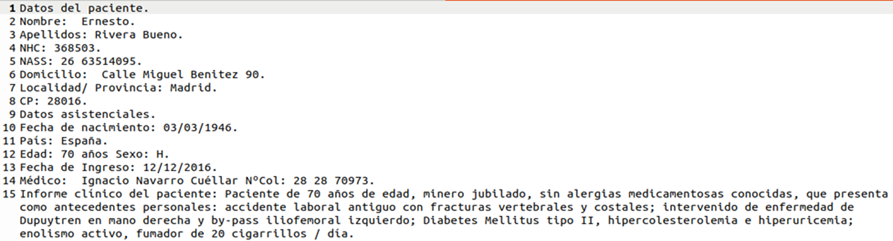

Fuente de datos MEDDOCAN
Fuente de datos MEDDOCAN
Fuente de datos MEDDOCAN
Como segunda fuente de datos utilizada durante el desarrollo de las prácticas, se emplea el corpus MEDDOCAN (Medical Document Anonymization), un conjunto de documentos clínicos sintéticos diseñado para la investigación en Procesamiento del Lenguaje Natural (NLP) y anonimización de información sanitaria.
MEDDOCAN fue desarrollado en el marco de la competición MEDDOCAN IberLEF, cuyo objetivo consiste en fomentar la investigación sobre técnicas automáticas de anonimización de documentos clínicos escritos en español. El corpus contiene información médica anonimizada y puede utilizarse con fines académicos y de investigación sin comprometer la privacidad de pacientes reales. PlanTL-GOB-ES, SPACCC_MEDDOCAN. https://github.com/PlanTL-GOB-ES/SPACCC_MEDDOCAN
MEDDOCAN contiene una colección de 1.000 documentos clínicos sintéticos redactados en español. En conjunto, el corpus supera las 33.000 oraciones y las 495.000 palabras, con una media aproximada de 494 términos por documento. Gracias a este volumen de información, constituye un excelente caso práctico para experimentar con tecnologías Big Data orientadas al procesamiento de texto.
| Característica | Valor |
|---|---|
| Documentos | 1.000 |
| Idioma | Español |
| Oraciones | ≈ 33.000 |
| Palabras | ≈ 495.000 |
| Formato | TXT (UTF-8) |
Los documentos se distribuyen en formato texto plano (.txt), almacenándose cada caso clínico en un fichero independiente codificado en UTF-8. Esta organización facilita su integración con el ecosistema Hadoop, permitiendo cargar directamente los archivos en HDFS y procesarlos mediante MapReduce o Hadoop Streaming utilizando Python.
/media/notebooks/txt
Desde este directorio los archivos quedan disponibles automáticamente dentro
del contenedor NameNode, pudiendo ser procesados mediante
HDFS, Hadoop Streaming y MapReduce.

Ejemplo de un documento clínico del corpus MEDDOCAN.
Cada documento incorpora información clínica anonimizada correspondiente a un paciente, incluyendo datos personales, administrativos y médicos.
Durante las prácticas del curso, el corpus MEDDOCAN se utilizará para desarrollar ejercicios relacionados con el procesamiento distribuido de texto utilizando el ecosistema Apache Hadoop. Los estudiantes podrán cargar los documentos en HDFS, procesarlos mediante trabajos MapReduce implementados en Python, aplicar técnicas de anonimización, extraer información relevante y analizar grandes volúmenes de texto clínico de forma distribuida.
MEDDOCAN constituye un excelente ejemplo de conjunto de datos no estructurados para el aprendizaje de tecnologías Big Data. Su integración con Hadoop permite combinar procesamiento distribuido, análisis documental y técnicas de anonimización sobre un corpus clínico de gran tamaño, proporcionando un entorno seguro y realista para la realización de prácticas académicas.